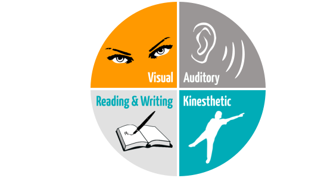
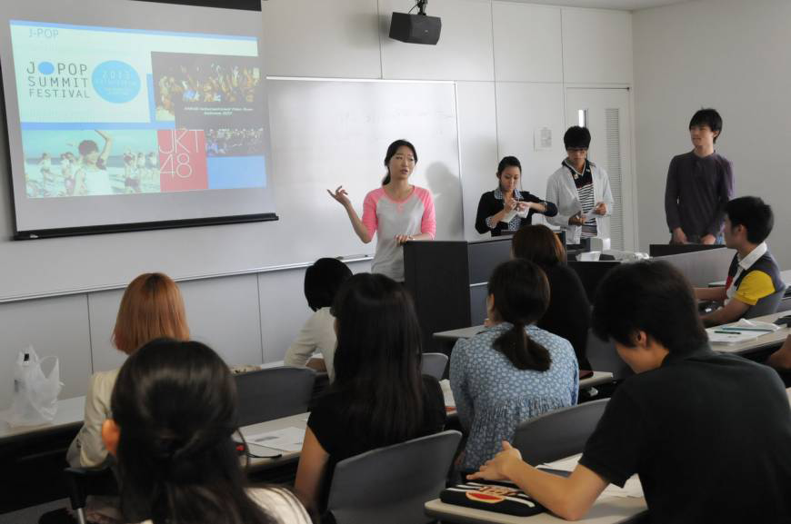
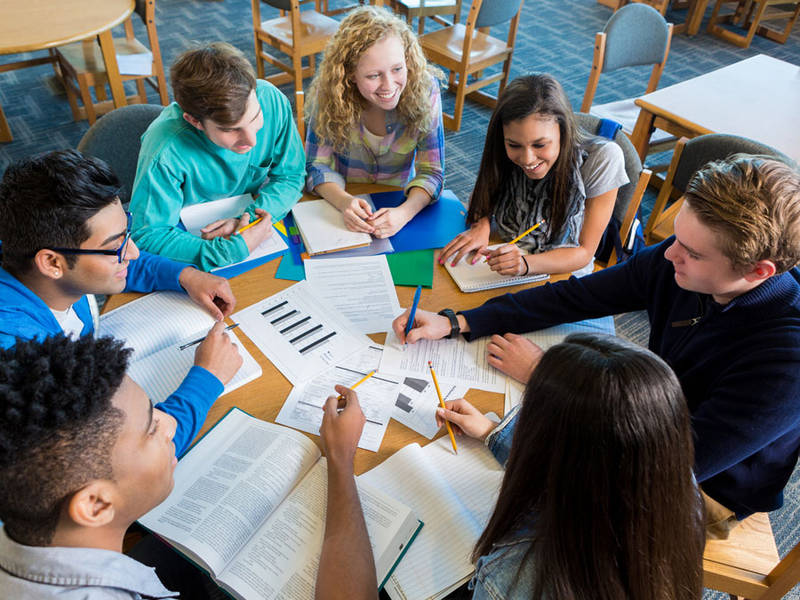

As I was sitting in my weekly lecture at university, frantically trying to scribble notes in short hand, to then write them up in detail later, I couldn’t help thinking how archaic this particular teaching method is. This traditional style of classroom teaching has been in use for years and it certainly doesn't suit my own preferred style of learning. Surely with modern day technology and the various interactive tools now available there must be better ways of adapting teaching methods to suit individual learning styles? If so, would this lead to a better experience for students and improved performance? What impact would there be for teachers? To answer these questions, I needed to research the topic further.
As a first step, I felt it was important to understand the different learning styles. Jon Rosewell from The Open University tells us that,
“There is no one single method of learning; there are many, and what works best depends on the task, the context and your personality”
I therefore looked at various models and tests, such as VARK, Honey and Mumford and Cognitive Ability Tests (CAT), to understand how to identify different learning types. I discovered that different people have different preferred methods of learning, and if teaching methods could be adapted to match these different learning styles, then better results may be achieved. It was clear that once style of teaching would not suit all students.
The next step was to look at both traditional and modern teaching methods, analyse the pros and cons from both a teacher and student perspective, and then to decide whether or not one of these methods was more effective than the other. I also needed to understand the wider implications of introducing new and innovative technology to the classroom such as cost and the potential need to retrain teachers to become digitally literate. According to Leah Anne Levy from the University of Southern California, this is crucial,
“to avoid policies that simply mandate placing technology into the hands of students without thought for how that technology will be used.”
This research and analysis would then enable me to assess how teaching methods might be improved to benefit both students and teachers and what impact there would be if more modern methods and new technology were introduced to the classroom.
Over the years there have been various different models and techniques used to identify learning styles. One of the best known models is VARK. This acronym stands for Visual, Auditory, Read/Write, and Kinesthetic. According to an article written by Neil Fleming and Colleen Mills on VARK Modalities, there are four key ways to categorise learning styles.
I believe this model is very effective at identifying the different preferences and styles and I can easily relate to it, describing myself as being a mixture between Visual and Kinesthetic. It is also clear to see how each learning type would respond best to different methods of teaching.
 https://www.mysimpleshow.com/learning-styles-the-vark-model/Another well-known model, which has been based upon the work of Kolb, was developed by Peter Honey and Alan Mumford. They also categorised learners into four different types and they are best known for creating a questionnaire for students to use to help them understand their own learning preferences. Honey and Mumford categorise learners as Activists, Reflectors, Theorists and Pragmatists.
Whilst I can easily identify my category of learning through the VARK model, I find the Honey and Mumford version a little less clear and defined. If I was to use this model, I think I would be mainly Activist but would also have some Pragmatist characteristics.
Following a discussion with a local grammar school teacher, I discovered that most secondary level schools have moved away from the above models and now use Cognitive Ability Tests (CATs) to assess ability. These tests focus on three different areas, Verbal, Quantitative and Non-Verbal. Verbal is described as 'thinking with words', Quantitative is 'thinking with numbers' and Non-Verbal is 'thinking with shapes and space'. The tests are measured against national benchmarks and they give teachers an idea of how a child is likely to perform academically and what method of learning is best suited to them. They also help teachers to determine why children may not be achieving and provide guidance as to what methods of teaching/learning may be more effective for those particular children.
Whilst the above models are helpful for both learners and teachers to identify different preferences, it is unlikely that people will fit in to just one type of learning style, for example, I have discovered that, based on the VARK model, I am a mix of ‘Visual’ and Kinesthetic, or based on Honey and Mumford’s model, a mix of ‘Activist’ and ‘Pragmatist’. Also, it is possible that if different types of people are working together in a group situation, this may lead individuals to be influenced by others into adopting different styles from those in a formal learning situation.
It is however helpful for learners to understand the different types of learning methods, to know when to use each of them and to understand which ones work best for them. Unfortunately this is not always the case. Learners are not always aware of their own preferences or how to maximise their learning potential based on these preferences. This would be an important skill for them to acquire.
Similarly, understanding students preferred learning styles, should help teachers to tailor lessons to match each of these preferences. However the reality is that students’ learning style needs may be totally different from the instructor’s preferred teaching style. The danger is that if teaching styles are not matched to learning styles this may lead to student boredom, poor test results and decisions to drop out of courses.
According to an article written by the Centre for Educational Neuroscience, there are two main disadvantages with the use of learning styles in schools. First of all, if a student is labelled as one particular type of learner, this may restrict them from trying other methods which may also suit them, and secondly, the tools which are available for schools to buy to measure students' learning styles and then provide advice about which teaching methods would work best, are expensive and take up valuable time to use.
Despite this, it is clear that one method of teaching will not fit all. It is therefore important to identify each student's preferred style of learning and then endeavour to adapt teaching methods accordingly. By doing so, there is a higher chance of the student reaching their full potential and obtaining a higher final mark.
Bearing in mind what I have just learnt about different learning styles, I now want to consider traditional teaching methods. What exactly are traditional methods and do they still have a place in the classroom today?
In his article for the University of Auckland, Drew Schrader defines traditional teaching as,
“the expectation that students will learn because we tell them to”.
He suggests that going ‘more traditional’ simply means
 https://www.dreamstime.com/stock-photo-audience-applauding-speaker-business-conference-image67523461“force-feeding information to students when they have no identified use for it other than compliance”.
Harry Broudy expands on this definition in his book entitled ‘The Role of Imagery in Learning’, as he tells us that learning is brought about by conditioning. Desired responses are rewarded and unwanted responses are punished. He states that conditioning techniques are particularly successful in teaching a wide variety of skills and attitudes, such as reciting the multiplication tables, spelling hundreds of words, and recollecting numerous facts in history and geography.
In her blog entitled “Are Tradition Teaching Methods Still Effective?”, Arzel Arioza explains that methods used in traditional teaching can be broken into three key areas:
Eric Gill looks at teaching styles from a slightly different perspective in his article entitled, “What is Your Teaching Style?”. He explains that traditional teaching styles can be described as the ‘Authority, or Lecture style’ or the ‘Demonstrator, or Coach style’.
I tend to disagree with these descriptions to some extent as, from my own experience, not all teaching is one-way. I have come across many teachers who have tried to encourage two-way communication and discussion during lectures.
None the less, traditional methods of teaching, as described above, are still widely used in schools and universities. Classes often involve rote learning and students depend on memorising the information, sometimes without completely understanding the subject. To complete the curriculum and gain their qualification, they only need to pass the tests. The drawback with this method is that information learned this way, can quickly be forgotten again after the test has been taken and passed.
Whilst traditional teaching is considered to be successful for providing a formal education in a classroom setting, it does have some other disadvantages, especially with the advance of technology which has made lessons more interactive and fun. Long lectures, having to memorise information, and having little interaction during classes often impacts on student engagement. This can lead to students becoming bored and missing classes altogether. Also, in a traditional teaching environment, students do not have the opportunity to interact with their teacher or fellow students.
Sonya Jackson, in her article for Getting Smart, comments that the traditional method of teaching which has been used for many years is no longer effective when compared with the more modern and innovative methods and tools that are now available in schools. She states,
"greater student interaction is encouraged, the boundaries of authority are being broken down, and a focus on enjoyment over grades is emphasised."
Ms Jackson suggests that because traditional techniques use repetition and memorisation of information, students are not developing their own critical thinking, problem solving and decision-making skills.
There are however some advantages of using this disciplined approach as, not only do students learn what they need to in order to pass examinations, classes tend to be well-structured with time being managed efficiently and there are clear rules in place to manage students' behaviour.
According to a study published by the Sutton Trust and Durham University,
"traditional styles that reward effort, use class time efficiently and insist on clear rules to manage pupil behaviour, are more likely to succeed".
This study has however been somewhat contentious within the teaching profession as there have been many debates regarding 'progressive' and 'traditional' best practice.
Based on the above research, it is evident that traditional teaching methods are capable of producing good academic results, efficiently run classes and well controlled student behaviour. I still believe however that listening to lecturers along with text related study does not suit everyone.
There is also good evidence to suggest that introducing more interaction and fun to the classroom will lead to better student engagement, and if teaching methods can be adapted to students’ preferred learning styles, this in turn will lead to better results. Perhaps therefore, there is still a place for traditional methods provided they are combined with more modern methods in order to create a more effective, fun and interactive learning experience.
Having researched traditional methods of teaching, I now want to consider more modern methods and how the use of technology could assist both students and teachers.
According to an article written by the Cambridge Centre for Sixth-Form Studies, the modern way of teaching focuses more on students’ needs. It is more activity based, using questioning, explaining and demonstration. It encourages students to collaborate and become more productive by exchanging thoughts and ideas. This approach helps students to develop critical thinking skills and retain knowledge.
In their book entitled “Success in Groupwork”, Peter Hartley and Mark Dawson advise that students often report they learn more from working on a project with other people than they do from individual assignments. Working as a team encourages more creative thinking and leads to greater achievements. This only works of course if the group gets on with each other.
 https://www.tum.de/en/about-tum/news/press-releases/detail/article/34318/In recent years the introduction of technology into the classroom has allowed teachers to experiment with new and different teaching methods. In her article for Securedge, Ashley Wainwright provides a few different suggestions for teachers to try:
Another interesting tool is Ximbus, which is a multi-media teaching app. This allows teachers to build the lesson content in a set timeline using multimedia such as YouTube, Google Drive, Microsoft OneDrive, online image search and website URLs. Students then follow the lessons on their own devices. Teachers can monitor students’ progress, view their usage reports and set controls to make sure they navigate the content in the correct order.
The introduction of technology provides some exciting opportunities for education and it is easy to see how interaction and engagement could be improved, however some teachers argue that technology can be distracting and can make cheating easier. Vawn Himmelsbach, in his article for Top Hat, states that,
“technology could be seen as the culprit, or it could be harnessed to improve engagement and effectiveness.”
Technology not only has the potential to increase engagement but it also encourages full participation of students through tools such as online polling and quizzes. These can also be helpful for the teacher to identify areas where the students may be struggling. Another advantage is the countless multi-media resources that are available online as well as access to textbooks and course materials that are always up to date.
Digital literacy is considered to be a very important life skill. Using technology in the classroom teaches students to differentiate reliable from unreliable sources and how to use the internet in a responsible way. For teachers there are online tools available to assist with tedious tasks such as keeping track of attendance and performance.
There are however also some disadvantages. Students may be tempted to use their mobile phones or laptops for personal purposes during lessons, which not only distracts them but can also distract others around them. It is therefore important that teachers set guidelines and create a culture of respect.
Another concern is that the use of technology will reduce the amount of verbal communication during lessons and this will then impact on students’ ability to be good verbal communicators in the future. It would therefore be important for the teacher to balance the use of technology with other verbal learning activities.
As already mentioned, it is felt that technology can foster cheating. Access to the internet makes it much easier for students to copy and paste someone else’s work, or they could hire online essay-writers. Vawn Himmelsbach suggests that one solution for this is to,
“make exams open-book and focus on problem-solving and mastery rather than retention.”
There is also software available which allows teachers to set slightly different questions for each student.
Another major drawback is the cost of resources. Digital hardware and software is very expensive and school budgets are already badly stretched. This may lead to students being asked to purchase their own iPads or tablets and not all families can afford to do this. It may therefore be necessary to share resources in the classroom and work in groups rather than individually. Another problem may be connectivity. Schools and universities would need to have sufficient servers and IT infrastructure and support in place, as classes relying on internet access would be badly disrupted if this should fail.
https://www.bostonglobe.com/opinion/editorials/2016/02/25/boston-school-budget-this-what-means-starve-then-where-sign/z0eWXsn4aQMmt80KVRUpeJ/story.htmlMany teachers are also currently stretched and the thought of learning how to use new technology, having to adopt new teaching methods and starting from scratch again to build new lesson plans is very daunting. This is considerably more difficult for those teachers who are part-time and only have a reduced number of hours in the week to fit everything into. Considerable support and training would be required.
Whilst it is clear from my research that the use of technology can be highly effective in the classroom and provide better tools and activities to match individual learning styles, it is also clear that there are many issues to overcome. Probably one of the biggest of these is implementation. How will teachers find the time to learn new skills and adapt their current teaching methods and lesson plans? How will schools and universities afford to purchase the resources required? It may therefore be necessary to embark upon a more gradual programme of change to allow time for the necessary training and spread the cost of resources. Whilst technology provides many different tools for teachers to use, it is the teacher’s role to determine which ones will best engage their students.
In conclusion, I have learnt that all students have different preferred styles of learning and therefore, one style of teaching does not fit all. Learning how to recognise these different preferences is an important skill for both students and teachers as this will enable lessons to be more effective and thus ensure a better chance of students achieving their full potential.
I acknowledge however that it would be almost impossible for teachers to prepare each lesson in four different formats in order to suit all learners. Perhaps therefore, the format should be determined by the content of the subject rather than by each preferred learner style.
I have also come to the conclusion that there is still a place today for the traditional style of teaching. Whilst lessons may be less interactive, it is evident that this style of teaching and learning is still producing good academic results, and it has the added advantage of classes being well structured and class time being managed efficiently. I would argue however that more interaction and fun may lead to better student engagement.
The introduction of technology provides some exciting opportunities for education. It is clear from my research that there is a wide range of options and tools available which would appeal to different learning styles, encourage much more interaction and enable teachers to personalise lessons to individuals. However there are also major difficulties to overcome such as the cost of resources, connectivity issues and the time impact on teachers to learn how to use the technology and then to prepare new lesson plans. Whilst the use of new and innovative technology in schools and universities is definitely something to aim for, perhaps it should be introduced on a more gradual basis in order to spread the cost, get the right IT infrastructure in place and give teachers sufficient time to upskill and adapt.
In the meantime, a combination of traditional and modern teaching methods may be the most effective solution. If there is an understanding of when traditional methods work best and when instead more modern and innovative methods should be used, then it should be possible to create a more flexible interactive learning experience. Vawn Himmelsbach sums it up well when he says,
“the key to technology in the classroom is always going to be the teacher-student relationship, because that’s where the education happens”.
https://www.open.edu/openlearn/ocw/pluginfile.php/629607/mod_resource/content /1/t175_4_3.pdf (accessed 27/11/18)
https://rossieronline.usc.edu/blog/teacher-digital-literacy/ (accessed 28/11/18)
Broudy, H. (1999). The Role of Imagery in Learning. Los Angeles: The Getty Institute for Education in the Arts
http://vark-learn.com/introduction-to-vark/the-vark-modalities/ (accessed 13/10/18)
http://www.blog.prezi.com/the-four-different-types-of-learners-and-what-they-mean-to-your-presentations-infographic/ (accessed 1/12/18)
Honey, P. and Mumford, A. (1986) The Manual of Learning Styles, Peter Honey Associates
Armstrong, M. (2003) A Handbook of Human Resource Management Practice (9th Edition), Kogan Page Limited
Martin, M. and Jackson, T. (2006) Personnel Practice (4th Edition), Chartered Institute of Personnel and Development
Marchington, M. and Wilkinson, A. (2008) Human Resource Management at Work, Chartered Institute of Personnel and Development
https://www.theschoolrun.com/year-7-cats-what-every-parent-needs-know (accessed 1/12/18)
Marton, F. and Booth, S. (1997) Learning and Awareness, Lawrence Erlbaum Associates, Inc
https://www.gl-assessment.co.uk/products/cognitive-abilities-test-cat4/ (accessed 2/12/18)
https://www.gettingsmart.com/ (accessed 2/12/18)
https://www.jisc.ac.uk/news/is-digital-technology-changing-learning-and-teaching-15-mar-2017# (accessed 18/10/18)
https://www.ccss.co.uk/news/traditional-vs-modern-teaching/ (accessed 2/12/18)
https://education.cu-portland.edu/blog/classroom-resources/5-types-of-classroom-teaching-styles/ (accessed 2/12/18)
https://arzelonline.wordpress.com/2012/06/25/are-traditional-teaching-methods-still-effective/ (accessed 2/12/18)
https://www.theguardian.com/education/2014/oct/31/education-traditional-teaching-versus-progressive (accessed 2/12/18)
https://www.ccss.co.uk/news/traditional-vs-modern-teaching/ (accessed 4/12/18)
Hartley, P. and Dawson, M. Success in Groupwork (2010), Palgrave MacMillan
https://www.securedgenetworks.com/blog/7-Fun-Ways-to-Use-Technology-in-the-classroom-to-enrich-learning (accessed 5/12/18)
https://tophat.com/blog/6-pros-cons-technology-classroom/ (accessed 5/12/18)